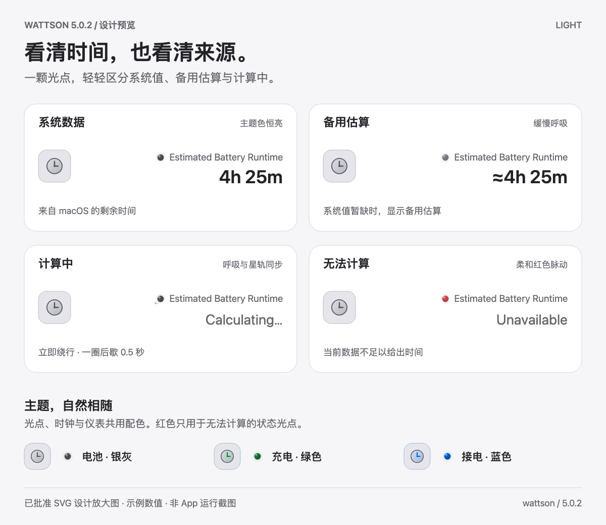
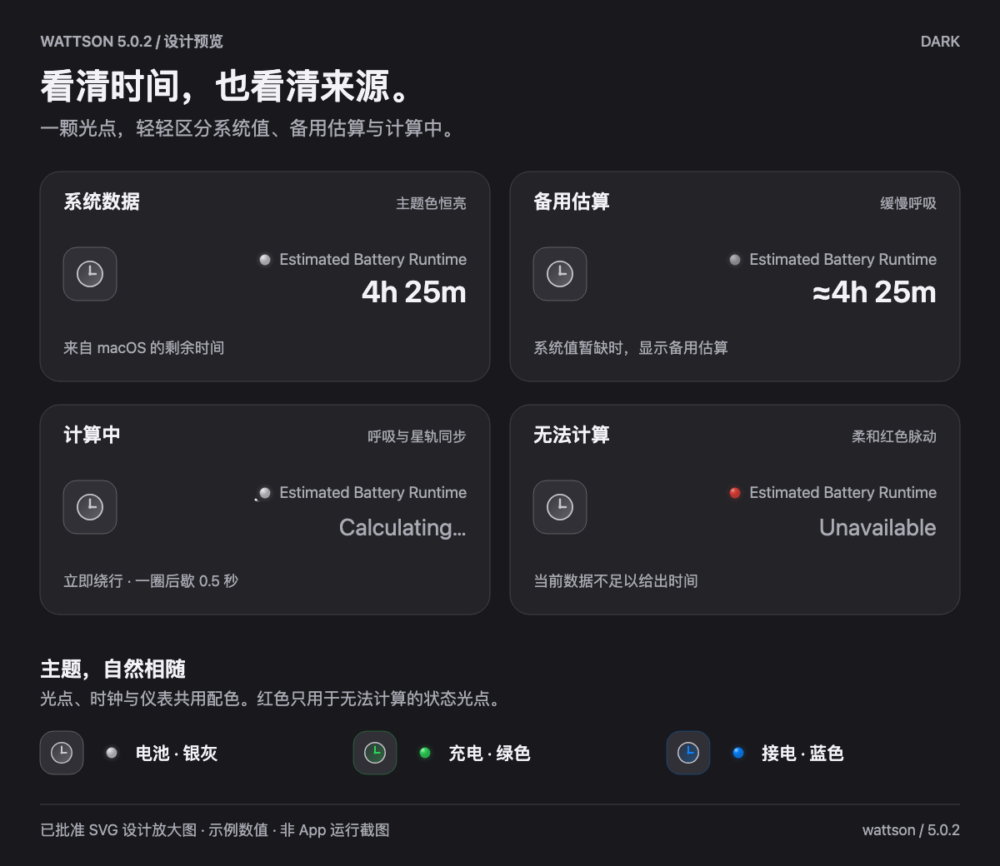
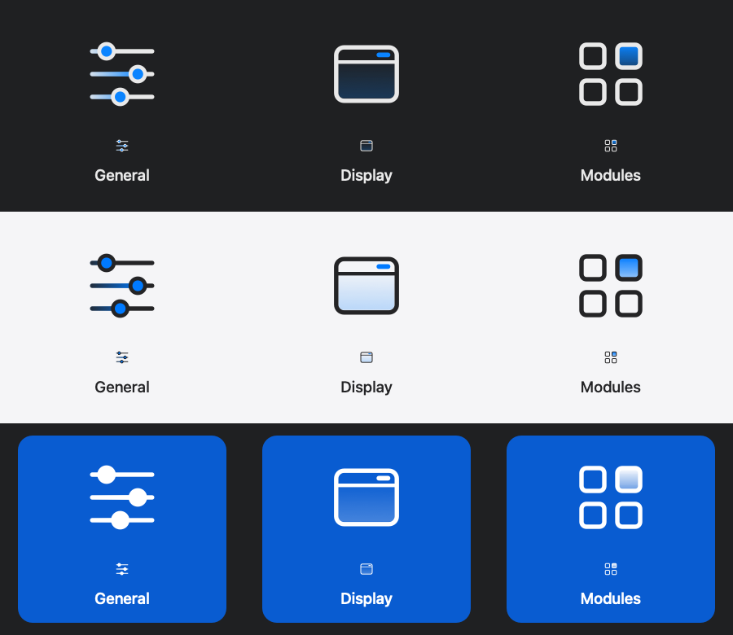
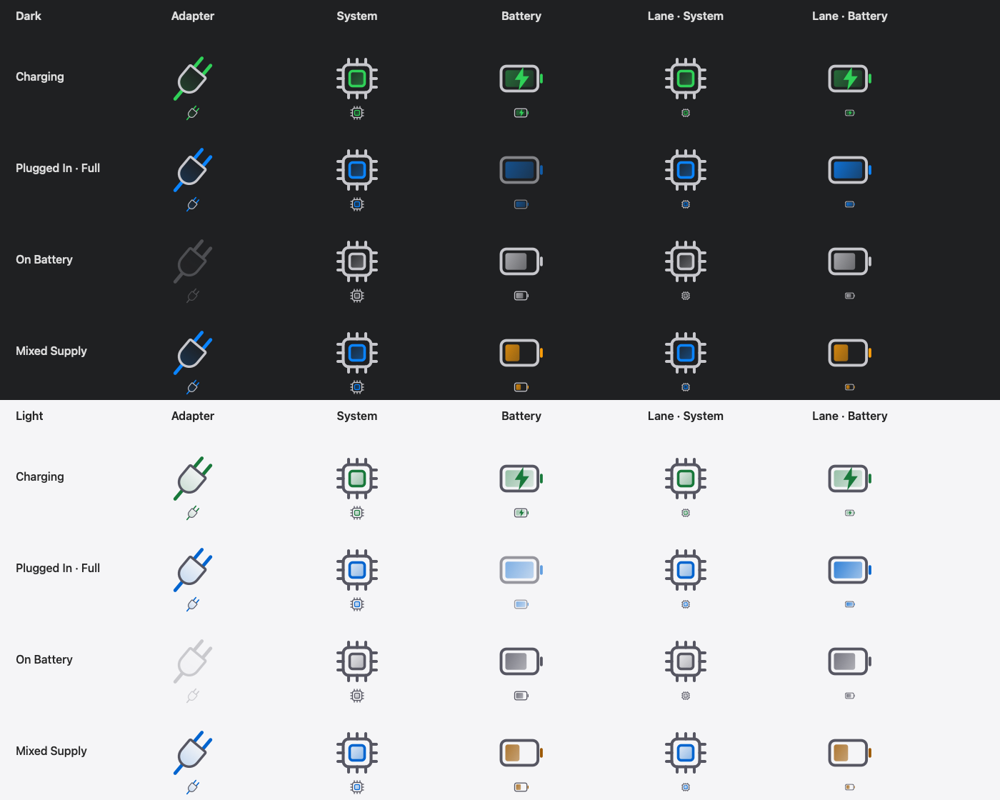

Modules
6 枚模块图标
下载 SVG ZIP一颗轻亮的光点，标明系统数据、备用估算与计算中。渐变时钟沿用仪表配色，让细节自然融入界面。
Light / Dark · 已批准 SVG 设计放大图


计算中立即开始斜向绕行，星轨与呼吸共同收暗；停歇 0.5 秒，再开始下一圈。
系统值恒亮；系统值暂缺时，备用估算缓慢呼吸。图中时间为示例，静态图展示动效的一帧。以上为已批准 HTML / SVG 设计预览，并非 App 运行截图或测量准确率演示。
保留的批准原稿 · 原生离屏图标效果



固定场景 · 原生离屏图标效果


这些设置与供电图标效果图从批准来源逐字节保留，使用固定场景离屏绘制，并非运行中的 App 窗口或实时电池数据。
20 枚原稿 · 4 个版本化源文件包
原稿与本版本源码逐字节一致，背景透明、无嵌入位图。App 绘图按外观与供电状态赋色；SVG 中的蓝色是主题色占位。状态光点由原生代码绘制，动态设计在上方单独预览。